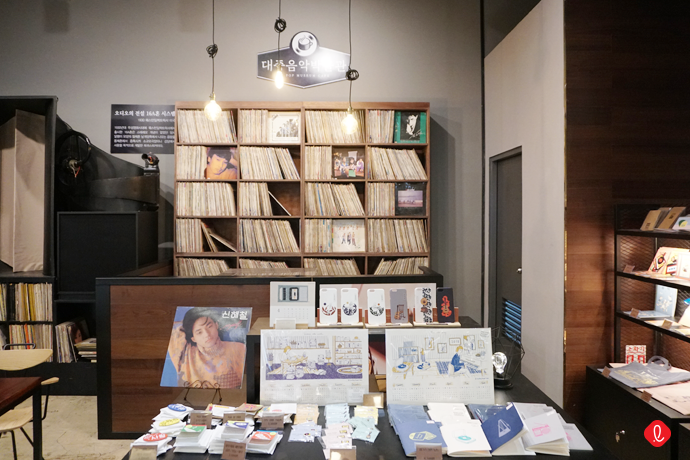

카페 대중음악박물관
대중음악박물관
위치 : 서울 송파구 올림픽로 300 롯데월드몰 5층
운영 시간 : 매일 10:30~22:00
무엇이 있나요?
대중음악박물관이란 이름을 달고 카페처럼 꾸며진 이곳은
경주에 위치한 한국대중음악박물관의 서울점입니다.
대중음악이 태동한 일제강점기부터
현재에 이르기까지 100년의 한국대중음악사를 만날 수 있는 곳으로
국내 희귀 자료와 음반 등을 상시 기획해 전시하고 있죠.
#발라드_커피 #통기타_커피 #트로트_커피 #락_커피
